электронный
ресурс по учебной дисциплине 1-58 01 01 - "ИНЖЕНЕРНО-ПСИХОЛОГИЧЕСКОЕ ОБЕСПЕЧЕНИЕ ИНФОРМАЦИОННЫХ ТЕХНОЛОГИЙ"
|
||
| Оглавление | Программа | Теория | Практика| Контроль знаний | Об авторах | ||
|
Содержание
Технологии создания микродатчиков § 13.1 Классификация микродатчиков. § 13.2 Особенности создания микродатчиков. § 13.3 Применение микродатчиков. § 13.1 Классификация микродатчиков. В течение последних 20 лет наблюдается тенденция миниатюризации датчиков, при этом разработчики сенсорной техники стремились создать микродатчики, сопоставимые с микроэлектронными схемами с точки зрения такого показателя, как производительность/стоимость. Отсутствие микродатчиков такого типа сдерживало широкое применение микроэлектронных технологий в сенсорных системах. В последнее время были созданы некоторые модели микродатчиков на основе МЭМС, которые были освоены в промышленном производстве: к ним относятся микродатчики давления и ускорения, магнитные микродатчики, вибрационные микрогироскопы и т.д. Такие микродатчики могли бы получить более широкое распространение при интенсивном развитии микроэлектронной совместимости. Кроме того, при создании МЭМС и микродатчиков на их основе необходимо совершенствовать такие параметры, как смещение нуля, уровень шума и нелинейность и др. Характеристики микродатчиков могут также совершенствоваться за счет использования новых, более качественных материалов и технологий производства. Очень важно обеспечить возможность оптимального интегрирования микродатчиков в информационные системы. Следует также обратить внимание на более широкое использование понятия интеллектуальности при создании микродатчиков и измерительных систем. Современные сенсорные системы обычно реализуют функции усиления и обработки сигнала, а также функции запоминания. В гибридных сенсорных микросистемах на электронном чипе должна быть предусмотрена возможность совмещения с чипами электронной обработки сигналов Датчик – это устройство, воспринимающее внешние воздействия и реагирующее на них изменением электрических сигналов. Под внешним воздействием понимается количественная характеристика объекта, его свойство или качество, которую необходимо воспринять и преобразовать в электрический сигнал. Назначение датчиков – преобразование физической величины (электрической или чаще всего неэлектрической) в электрический сигнал, который может быть далее усилен, преобразован при помощи электронных устройств и/или передан по линиям передач. Выходными сигналами датчиков могут быть напряжение, ток или заряд, описываемые такими характеристиками как амплитуда, частота, фаза или цифровым кодом. Набор характеристик, описывающих сигнал, называется форматом выходного сигнала. Каждый датчик характеризуется набором входных параметров (любой физической природы) и набором выходных параметров. Все датчики можно разделить на датчики прямого действия и составные. Датчики прямого действия преобразуют внешнее воздействие непосредственно в электрический сигнал, используя для этого соответствующее физическое явление (например, фотоэффект). В составных датчиках выходной электрический сигнал получают после проведения несколько преобразований энергии из одного вида в другой и наконец в электрическую. В составе измерительных систем датчики могут быть наружными и встроенными. Наружные реагируют на внешние воздействия и сообщают системе об изменениях в окружающих условиях. Встроенные осуществляют контроль за функционированием измери-80 тельных систем, что необходимо для поддержания корректной работы всех внутренних устройств системы. Системы классификации датчиков могут быть самыми разнообразными в зависимости от цели проведения классификации. Например, одна из наиболее распространенных – датчики могут быть разделены на активные и пассивные. Активные датчики для своей работы нуждаются в электрическом сигнале возбуждения от внешнего источника энергии (например, резистивный тензодатчик, меняющий свое сопротивление в зависимости от величины деформации). Эти датчики называются также параметрическими. Пассивные датчики не нуждаются в дополнительном источнике энергии и в ответ на внешнее воздействие или его изменение на выходе такого датчика появляется электрический сигнал (фотодиод, например). В зависимости от выбора точки отсчета датчики можно разделить на абсолютные и относительные. Абсолютный датчик определяет внешний сигнал в абсолютных физических единицах, не зависящих от условий измерений. Выходной сигнал относительного датчика в каждом измерении может трактоваться по-разному, в зависимости от условий измерений. Например, термистор является абсолютным датчиком, поскольку его электрическое сопротивление напрямую зависит от абсолютной температуры, в то время как термопара является относительным датчиком, поскольку напряжение на его выходе зависит от градиента температуры, а не абсолютного ее значения. Классификацию датчиков можно проводить и по другим признакам. Например, по их характеристикам, материалам, из которых они изготовлены, по средствам детектирования, механизмам преобразования энергии воздействия в электрический сигнал, областям применения, видам внешних воздействий и т. д. Также можно датчики классифицировать в зависимости от того, что они измеряют и как они это делают (таблица 13.1). Проприоцептивные датчики используются для измерения собственного состояния робота, которое может включать положение с различным числом степеней свободы, температуру, напряжение на каких-либо элементах, потребляемый двигателем ток и так далее. Датчики также могут быть дифференцированы в зависимости от того, являются они пассивными или активными. Активным является такой датчик, который излучает энергию в окружающую среду, и измеряет свойства среды на основе отклика. Если датчик энергии не излучает — это пассивный датчик. Активные датчики, как правило, более робастны, чем пассивные датчики, так как они, в некоторой степени, управляют измеряемым сигналом. Например, пассивная система стереокамеры должна полагаться на внешний вид просматриваемой поверхности при выполнении согласования для триангуляции, в то время как системы структурированного света с проецированием рисунка на сцену менее чувствительны к характеристикам сцены. Тем не менее, помехи, поглощение и рассеяние излучаемого сигнала могут повлиять на работу активных датчиков. Проприоцептивные датчики являются, как правило, пассивными и обычно измеряют физические характеристики состояния робота, такие как положение сустава манипулятора, скорость, или ускорение, вращающий момент двигателя, и так далее. Датчики внешней среды, с другой стороны, могут быть разделены на контактные и бесконтактные. Контактные датчики, как правило, используют те же методы, что и проприоцептивные. Бесконтактные датчики используют методы измерений, применяемые для оценки физических свойств на расстоянии, включая интенсивность, дальность, направление, размер и прочее. Классификация часто используемых в робототехнике сенсоров, в зависимости от цели измерения (датчик внешней среды или проприоцептивный) и метода измерения (активный или пассивный) приведена в таблице 13.1. Таблица 13.1. – Классификация датчиков
§ 13.2 Особенности создания микродатчиков. Суть и принципы IMEMS – технологии. Интегрированная MEMS-технология. Разработчик технологии – фирма SNL (Sandia National Laboratory, США). Предпосылки разработки. Стояла задача: разработать технологию создания новейшего класса комплексированных изделий (интегрированных микро-систем), содержащих на одном кристалле (чипе): – Электронные устройства управления; – Микроэлектромеханические узлы. В первых проектах предполагалось: вначале изготавливать КМОП СБИС управления, а затем изготавливать механизмы и микроэлектромеханические узлы. Но возникал ряд сложных технологических задач и противоречий: алюминий, используемый в слоях механизации КМОП СБИС, не выдерживал механических нагрузок в объемных конструкциях. 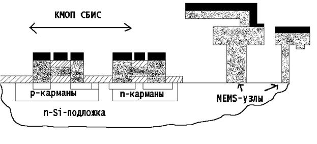 Рисунок 13.1 – Ранние проекты (блок-схема изделия) Техническим решением для устранения технологических противоречий стала IMEMS-технология. Она предполагает формирование механических устройств в углублении (в канавке) кремниевого слоя до изготовления КМОП СБИС управления. Технология создания КМОП/МЭМС - устройства: 1) В кремниевой подложке в начале формируется канавка глубиной 12мкм ; 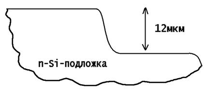 Рисунок 13.2 – Канавка, сформированная в кремниевой подложке 2) На поверхности канавки формируются поликремневые механические устройства. Правая часть рисунка – МЭМС-часть. Левой части рисунка при этом как бы не существует. 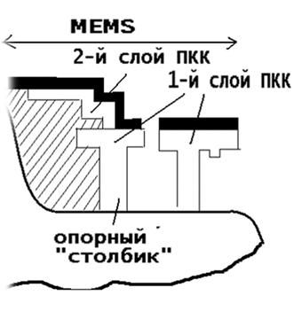 Рисунок 13.3 – Сформированные поликремневые механические устройства на поверхности канавки 3) Канавка заполняется двуокисью кремния. 4) Cлой выравнивается относительно поверхности кремниевой подложки методом химико-механической полировки. 5) Формирование в кремниевой подложке КМОП схемы (на рисунке это левая «КМОП СБИС»-часть). 6) Формирование в едином технологическом процессе электрических соединений: a) Для КМОП схемы управления; b) Для механических устройств; c) Соединений между схемой управления и механическими устройствами, сформированными в канавке. 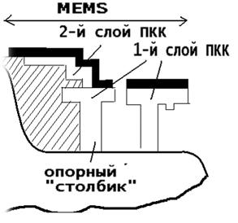 Рисунок 13.4 – Блок-схема КМОП/МЭМС устройства Изделия, созданные по IMEMS – технологии. В IMEMS-технологии реализуются многочисленные преимущества микроэлектроники. Использование поли-Si позволяет реализовать его очень хорошие механические свойства: 1. Структуры из поли-Si имеют высокую механическую прочность. Они выдерживают внешние воздействия силой 2-3 ГПа (для сравнения, у стали –200 МПа ÷ 1ГПа). 2. Структуры из поли-Si чрезвычайно гибки. Разработанная МЭМС – технология позволяет вмещать её процессы с базовыми технологическими процессами изготовления микрсхем управления: – КМОП схемами; – Биполярными схемами; – БиКМОП схемами; – КМОП / КНС схемами; – КМОП / КНИ схемами; – А3В5 схемами и др. Изготовление микросистемы осуществляется на основе субмикронных технологий микроэлектроники. Проводится формирование на одном чипе многоуровневых (многослойных) структур-микросистем: до 5-6-7 уровней (включая подложку), в том числе 2-3 поли-кремниевых механических слоя. Выражение “механических” означает – для со-здания микромеханических устройств. Таблица 13.2 – Примеры изделий
Подробнее о поли-Si : 1) Первые три слоя поли-Si осаждаются в канавку. В этих слоях выполняются МЭМС-узлы. 2) Четвертый, поверхностный слой поли-Si осаждается уже после поверхностной химико-механической обработки структуры. Он используется одновременно: 2.1.Для формирования КМОП СБИС; 2.2.Для завершения формирования деталей и узлов МЭМС 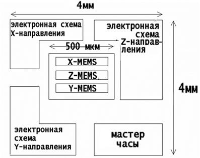 Рисунок 13.5 – Блок-схема чипа КМОП/СБИС/MEMS-изделия Минимальный размер элементов микросистемы составляет 1,25мкм. Используются пластины крепления диаметром 125мм и 150мм. Общее число фотолитографий в техпроцессе изготовления таких микросхем достигает 10-11 (иногда бывает 12-13) Перспектива: 1) уменьшение доли поли-Si при изготовлении механических структур 2) его замена на многослойные структуры типа AL/Si 3) его замена на специальные окислы 4) его замена на другие очень перспективные материалы Материалы МСТ. Основные материалы, применяемые для создания изделий МСТ: кремний; полимеры; керамика; металлы. В технологии МСТ выделяют две группы материалов – активные и конструкционные. Микросистемы представляют собой очень сложные конструкции; их создание требует сочетания разнообразных материалов. При создании сложных конструкций из различных материалов необходимо обязательно учитывать следующие их параметры и свойства: – кристаллическую совместимость; – термомеханическую совместимость; – тепловую сложность (допустимую тепловую нагрузку); – электрическую стойкость; – механическую стойкость; – механическую. Необходимо учитывать особенные условия функционирования МЭМС, а именно: – высокие температуры; – агрессивные среды; – радиация. Перспектива => базовая конструкция SiС/AlN.
Создание микродатчиков (МД) В составе МЭМС. Пример => микродатчик давления (по технологии объемной микрообработки). Методом электрохимического травления создается тонкая кремневая диафрагма (рис.13.6) (т.е. кремневая пластина утончается). 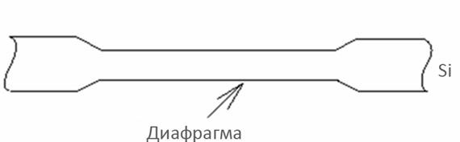 Рисунок 136 – Кремниевая диафрагма В кремниевой диафрагме путем внедрения бора ионной имплантацией создаются резисторы (рис.13.7). 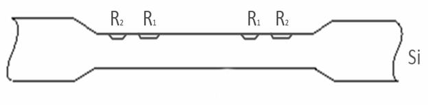 Рисунок 13.7 – Создание резисторов в кремниевой диафрагме Сопротивления этих резисторов про действием приложенного давления изменяются по-разному (в зависимости от их положения на диафрагме) (рис. 13.8). 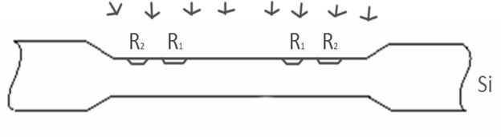 Рисунок 13.8 – Сопротивления резисторов в кремниевой диафрагме Пъезорезисторы соединены по мостовой схеме. Приложенное к диафрагме давление вызывает соответствующее изменение напряжения на выходе моста. Электронное обрамление микродатчика давления выполняется по стандартной техно-логии изготовления кремниевых ИС на том же кремниевом кристалле (чипе). На базе микродатчика давления могут быть построены датчики расхода жидкостей и газов. Пример => микродатчик ускорения ( по технологии поверхностной микрообработки ). Пределы измерений датчика от –50 G до +50g. Чувствительные элементы датчика образованы множеством одинаковых дифференциальных емкостных ячеек; их порядка 45. Каждая ячейка состоит из двух неподвижных пластин, между которыми перемещается подвижная пластина. Все подвижные пластины жестко прикреплены к общей балке Положение балки определяется: 1) с одной стороны – натяжением узких тонко-пленочных пружин, соединяющих концы балки с якорями; 2) с другой стороны – силой ускорения, действующей на балку. Каждая ячейка собрана из 2-х последовательно включенных конденсаторов: – образующих емкостной делитель ВЧ напряжения; – и имеющих одну подвижную пластину, с которой снимается напряжение. Пример =>микродатчик магнитного поля (разработанная технология полностью совместима со стандартными КМОП и БиКМОП технологиями производства ИС). Работает на основе магниточувстви-тельных элементов, в которых используется ГМРЭ в ТМП. Преимущества ЧЗ на основе ГМРЭ по сравнению с “обычными” МЧИС на основе анизотропного МРЭ в ТМП: 1) лучше чувствительность приборов; 2) лучше температурный коэффициент у приборов; 3) шире полоса пропускания частот; 4) изделия существенно дешевле. Пример => оптический микродатчик движения (моп - технология) Используется для получения информации(сведений) о движущемся предмете, имеет (интеллектуальные способности). Структура чипа дана ЗУ хранит информацию о предыдущем кадре. Электронная обрамление обеспечивает : • выдачу информации о текущем кадре • выдачу информации о предыдущем кадре • выдачу информации о разностном сигнале • обработку разностного сигнала(обработку разностной информации) Испытания проводили при кадровой частоте 60 Гц . Основное применение: • в системах защиты от несанкционированно входа в помещение • в системах контроля за движением транс-порта • в системах управления движением транс-порта Пример => сложные оптические датчики роботов(машинное зрение): • для прецизионного позицирования изделий и инструментов • для построения трехмерных систем машинного зрения, для определения параметров движения трехмерных движущихся объектов. • для распознания печатей, пломб, клейм, арабских цифр • для извлечения и расшифровки отдельных участков векторных карт и др. Пример => электронный емкостный датчик (по 3D - технологии на поверхности полупроводниковой подложки). Датчик расположен в центре чипа в окружении электронных блоков управления и обработки сигнала Электронные схемы изготовлены по стандартной технологии планарной микроэлектроники. Датчики и консоли изготовлены по 3D технологии поверхностной микрообработки и расположены на поверхности подложки. 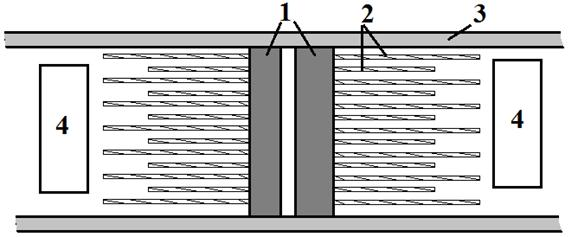 1 – тело емкостного датчика; 2 – консоли емкостного датчика; 3 – шины питания; 4 – электронные схемы обрамления, ИМС Рисунок 13.9 – Датчик, изготовленный по 3D-технологии 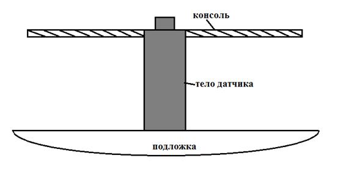 Рисунок 13.10 – Фрагмент электронного датчика (вид сбоку) 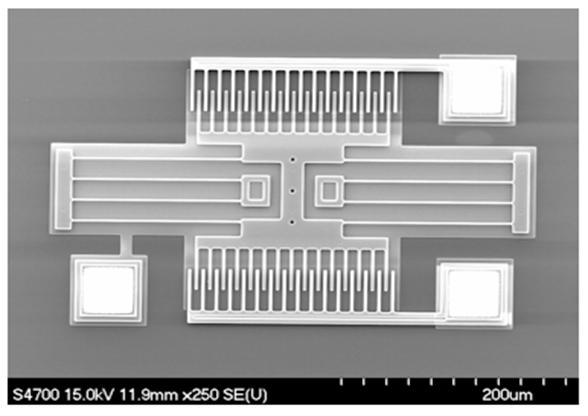 Рисунок 13.11 – Микрофотография электронного датчика (400мкм) § 13.3 Применение микродатчиков. Требования, предъявляемые к датчикам: - однозначная зависимость выходной величины от входной; - стабильность характеристик во времени; - высокая чувствительность; - малые размеры и масса; - отсутствие обратного воздействия на контролируемый процесс и на контролируемый параметр; - работа при различных условиях эксплуатации; - различные варианты монтажа. Рассмотрим более подробно характеристики, области применения и конструктивные особенности наиболее оригинальных реализаций микродатчиков. Благодаря большим успехам в развитии микромашинной технологии наибольшее практическое применение получили микродатчики механических и физических величин с пьезорезисторами и, в первую очередь, микродатчики давлений этого типа. Основные области применения таких микродатчиков давлений – это медицинская техника, где они применяются для измерения кровяного давления, а также автомобильная аппаратура, где они используются для измерения давлений газовых и жидких сред. В автомобильном оборудовании, кроме того, широко применяются микроакселерометры, выполняемые в основном на пьезорезисторных сенсорах ускорений. Они используются в системах защиты водителей при наездах на препятствия, в системах автоматического торможения без проскальзывания колес и др. Также в автомобилестроении находят применение микродатчики угловых скоростей – так называемые кремниевые микрогироскопы. Они используются в системах управления подвесками рам автомобилей, а также в системах вычисления траекторий их движения. Для измерений расходов газовых и жидких сред применяются микрорасходомеры с кремниевыми микросенсорами. Основные проблемы при разработке таких микрорасходомеров – это обеспечение высокой стойкости микросенсоров к воздействиям потоков, расходы которых измеряются, а также обеспечение высокой долговременной стабильности. Для измерений расходов воздушных потоков, поступающих в автомобильные двигатели, в основном применяются сенсоры скоростей этих потоков с миниатюрными терморезисторами (так называемые микротермоанемометры). Важным направлением является создание инерционных микродатчиков. Разработано несколько вариантов микроакселерометров, которые обладают высокой точностью. В последние годы также проведена разработка микросенсоров угловых скоростей инерционного типа. Они выполнены на кремниевой подложке по микромашинной технологии с использованием пленки из поликристаллического кремния, из которой изготовлен круглый чувствительный инерционный элемент. Чувствительному элементу задаются угловые колебания относительно центральной оси; в результате взаимодействия угловых колебаний и измеряемой угловой скорости возникают воздействующие на чувствительный элемент силы, которые возбуждают другую моду колебаний, измеряемую дополнительным сенсором колебаний. Разрешающая способность микросенсора угловой скорости, определяемая точностью регистрации второй моды колебаний, составляет около 0,1%. Сенсорные микродатчики на основе СБИС в настоящее время распространены достаточно широко. При изготовлении микродатчика магнитного поля на основе эффекта Холла использована стандартная технология формирования интегральных схем, которая позволяет реализовать достаточно высокую термостабильность. Наиболее высокую точность измерения магнитного поля удается получить на основе использования СБИС, содержащей кроме элемента Холла устройства концентрации магнитного потока и кондиционирования сигнала. Большое распространение получили кремниевые пьезорезисторные микродатчики давлений, предназначенные в основном для измерений динамических давлений водных потоков, а также микродатчики скоростей жидкостных потоков, которые применяются в микрорасходомерах. Диапазон измеряемых скоростей составляет от 0,2 до 30 м/с. Создан микродатчик скоростей воздушных потоков термоанемометрического типа, содержащий столбик из термоэлектрических (термопарных) преобразователей, закрепленный на кремниевой мембране, предварительно покрытой изолирующей пленкой из нитрида кремния. Микродатчики давлений с полупроводниковыми тензорезисторами (пьезорезисторами) имеют небольшую стоимость и широкое промышленное применение. Их основные недостатки – относительно невысокая чувствительность при выходном электрическом сигнале 10-100 мВ и значительный температурный дрейф характеристик, требующий применения дополнительных компенсационных устройств и периодических калибровок. Эти недостатки в меньшей степени присущи емкостным микродатчикам давлений, которые изготовляются по микромашинной технологии. Приемная мембрана такого датчика имеет квадратную форму с длиной сторон 400-500 мкм и толщиной около 20 мкм. Опорный чувствительный элемент микродатчика позволяет существенно снизить влияние паразитных емкостей на его показания. Площадь основания с обоими чувствительными элементами составляет 1,5´1,9 мм. Их начальные емкости составляют по 3,5 пФ, а изменение емкости рабочего чувствительного элемента под воздействием максимального измеряемого давления 68,6×104 Па составляет около 0,8 пФ. В ряде случаев при проведении химического анализа необходимо определять плотность жидкостей, имеющихся в очень малых количествах. Для этих целей разработан микродатчик плотности жидкостей планарной конструкции с кремниевыми капиллярными трубками, изготовляемый как одно целое по микромашинной технологии, который позволяет определять плотности жидкостей в объемах, составляющих 0,0035 мл. Микродатчик содержит плоский прямоугольный рамочный корпус, внутри которого располагаются две трубчатые рамки, консольно закрепленные в опорном элементе. Через отверстия трубчатые рамки заполняются жидкостью, плотность которой измеряется. С помощью системы электростатического возбуждения рамкам задаются противофазные крутильные колебания относительно продольной оси на резонансной частоте. Благодаря симметричной конструкции микроплотномера и совершенным упругим свойствам кремния, из которого изготовляется сенсор, добротность механической колебательной системы рамок в условиях воздушной атмосферы составляет около 3000. Благодаря этому обеспечиваются высокая разрешающая способность и стабильность работы микродатчика плотности. Измерение частот и амплитуд резонансных колебаний рамок проводится с помощью оптической системы.
| |||
| (С) БГУИР |